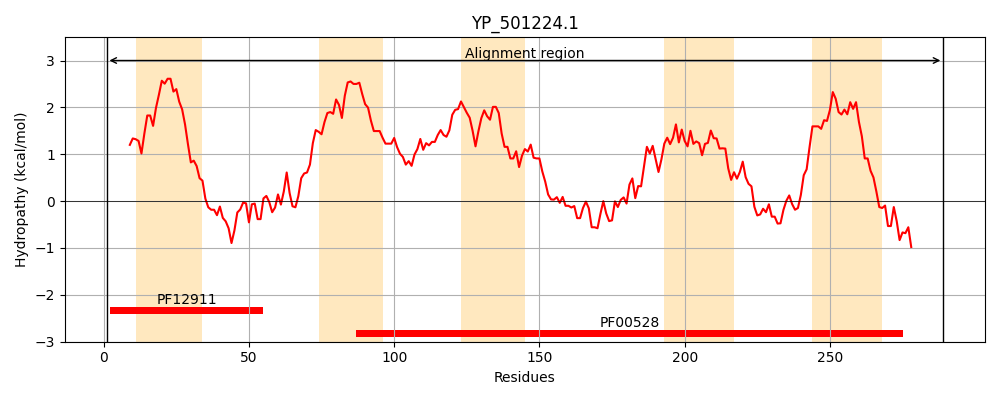
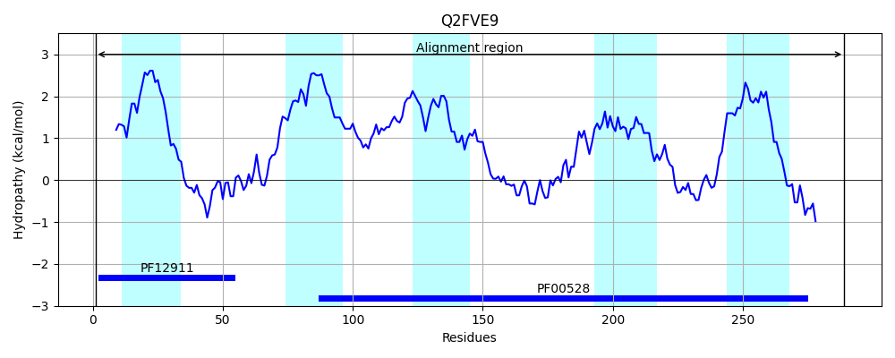
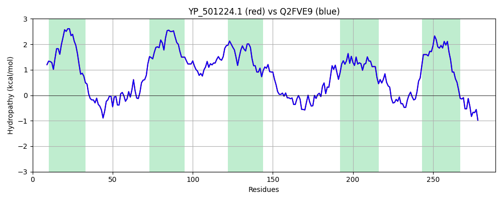

Hit Accession: Q2FVE9
Hit TCID: 3.A.1.5.43
Hit Description: gnl|BL_ORD_ID|13229 gnl|TC-DB|Q2FVE9|3.A.1.5.43 Nickel ABC transporter, permease protein, putative OS=Staphylococcus aureus (strain NCTC 8325) GN=SAOUHSC_02765 PE=3 SV=1
Mach Len: 289
e:0.000000
Query TMS Count : 5
Hit TMS Count: 5
TMS-Overlap Score: 6.000000
Predicted Substrates:None
BLAST Alignment:
Score: 1449 , Bit scores: 562 bits, E-value: 0.0e+00, Alignment length: 289, Percentage identity: 100
Query: 1 MIILKRLLQDKGAVIALGIIVLYVFLGLAAPLVTFYDPNHIDTANKFAGMSFQHLLGTDHLGRDILTRLIYAIRPSLLYVFVALFVSVLIGSILGFLSGYFQGFVDALIMRACDVMLAFPSYVVTLALIALFGMGAENIIMAFILTRWAWFCRVIRTSVMQYTASDHVRFAKTIGMNDMKIIHKHIMPLTLADIAIISSSSMCSMILQISGFSFLGLGVKAPTAEWGMMLNEARKVMFTHPEMMFAPGIAIVIIVMAFNFLSDALQIAIDPRISSKDKLRSVKKGVVQS 289
MIILKRLLQDKGAVIALGIIVLYVFLGLAAPLVTFYDPNHIDTANKFAGMSFQHLLGTDHLGRDILTRLIYAIRPSLLYVFVALFVSVLIGSILGFLSGYFQGFVDALIMRACDVMLAFPSYVVTLALIALFGMGAENIIMAFILTRWAWFCRVIRTSVMQYTASDHVRFAKTIGMNDMKIIHKHIMPLTLADIAIISSSSMCSMILQISGFSFLGLGVKAPTAEWGMMLNEARKVMFTHPEMMFAPGIAIVIIVMAFNFLSDALQIAIDPRISSKDKLRSVKKGVVQS
Sbjct: 1 MIILKRLLQDKGAVIALGIIVLYVFLGLAAPLVTFYDPNHIDTANKFAGMSFQHLLGTDHLGRDILTRLIYAIRPSLLYVFVALFVSVLIGSILGFLSGYFQGFVDALIMRACDVMLAFPSYVVTLALIALFGMGAENIIMAFILTRWAWFCRVIRTSVMQYTASDHVRFAKTIGMNDMKIIHKHIMPLTLADIAIISSSSMCSMILQISGFSFLGLGVKAPTAEWGMMLNEARKVMFTHPEMMFAPGIAIVIIVMAFNFLSDALQIAIDPRISSKDKLRSVKKGVVQS 289 | Protein Hydropathy Plots: |
|---|
|  |  |
Pairwise Alignment-Hydropathy Plot:
|
|---|
|  |